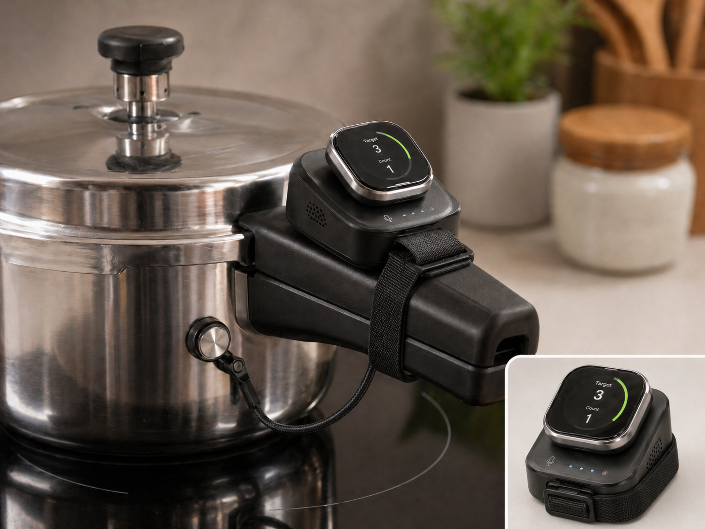
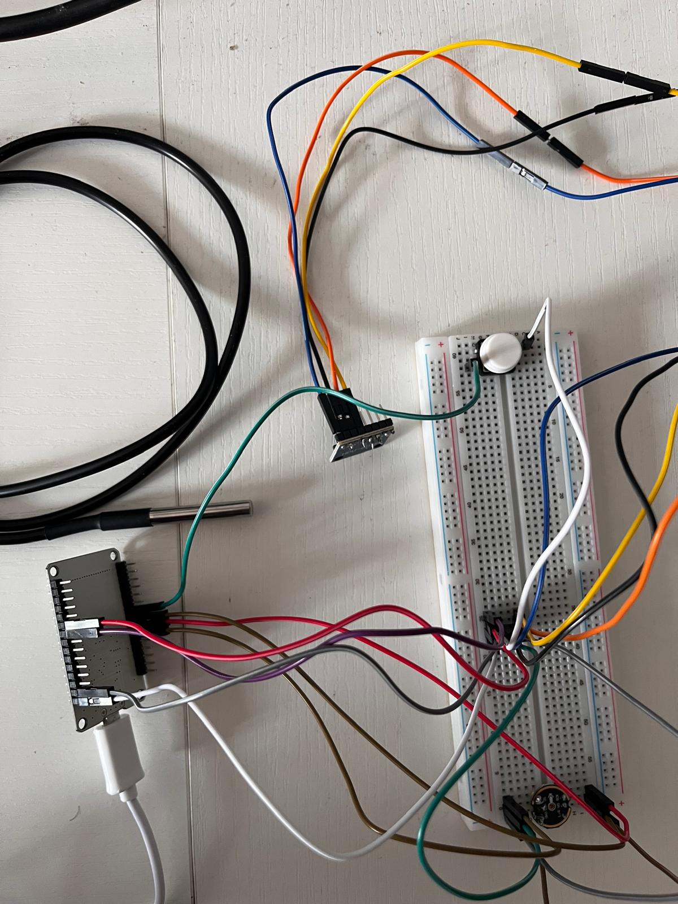
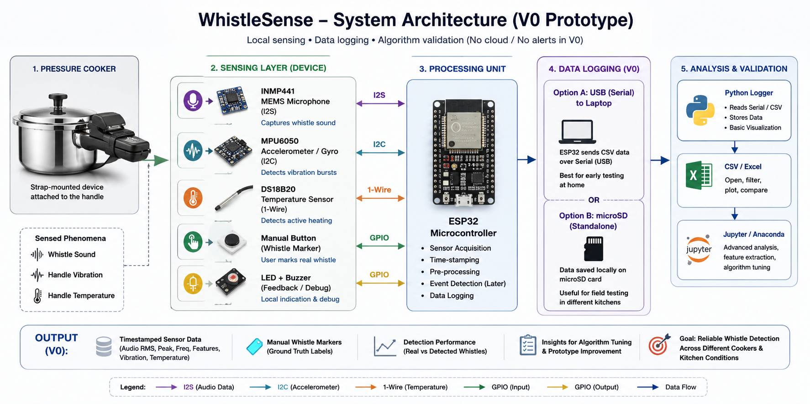
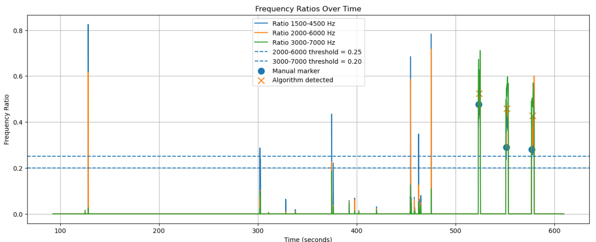
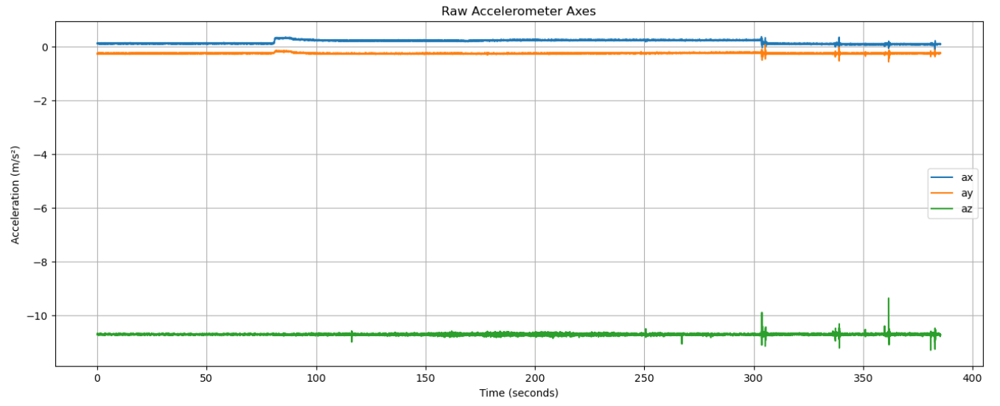
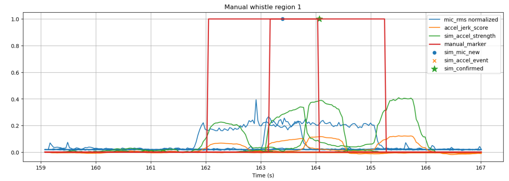

A smart pressure-cooker whistle detection prototype designed for Indian kitchens, built to explore audio sensing, vibration detection, temperature validation, and real cooking-session data logging.
WhistleSense is a smart pressure-cooker whistle counter concept developed as an independent hobby project. The idea was to create a compact device that attaches to a pressure cooker handle and helps users track whistle counts without needing to stand near the cooker throughout the cooking process.
The device concept combines multiple signals: pressure cooker whistle sound, vibration travelling through the cooker handle, and temperature feedback to confirm that the cooker is actively heating. The user sets a target whistle count, such as two or three whistles, and the device counts confirmed whistle events before alerting the user through a buzzer, LED/display indication, and eventually a phone notification.

The broader vision was to explore whether industrial-style automation concepts could be brought into everyday kitchen workflows. Instead of manually counting cooker whistles, the project investigated whether a small embedded device could identify real whistle events reliably using practical, low-cost sensors.
In many Indian kitchens, pressure cooker cooking is still tracked manually by counting whistles. This sounds simple, but it becomes inconvenient when the user steps away, gets distracted, or is managing multiple tasks at once.
The project explored whether a small alert-only device could reduce this mental load by detecting whistles and notifying the user once a target count is reached. The key product question was whether people would value an alert-only product, or whether they would only find the concept compelling if it could also turn off the stove automatically.
The main engineering challenge was not just detecting something loud. A real kitchen contains speech, utensils, mixer noise, TV audio, background movement, and short impulse sounds. The system needed to distinguish real cooker whistles from these false positives using multiple signal features.
WhistleSense V0 was designed as a temporary sensor band or clip attached to a pressure cooker handle. The goal of this prototype was not to build a polished final consumer product, but to collect real cooking-session data and understand whether whistles could be detected accurately.
The V0 prototype did not need internet connectivity or mobile notifications. Its main purpose was data capture: measuring sensor signals, saving timestamped readings, and allowing manual whistle marking so the algorithm could be compared against human-labelled ground truth.

The WhistleSense architecture was built around an ESP32 microcontroller collecting multiple sensor streams and sending structured readings to a laptop over serial for logging and analysis. The design was kept intentionally simple so that early testing could focus on signal quality and detection feasibility.

The first sensor stack was selected to test whether whistle detection could be made more reliable by combining sound, vibration, and heat context. The microphone provided the primary signal, while accelerometer and temperature readings were included to support future sensor fusion and reduce false positives.
Used as the main development board because it is low-cost, widely available, easy to program, and supports Wi-Fi/Bluetooth for future iterations.
Used to measure whistle audio intensity and frequency patterns, and to compare pressure cooker whistles against speech, utensils, mixer noise, TV audio, and other kitchen sounds.
Used to explore vibration bursts during whistle events and check whether vibration travels clearly to the cooker handle across different cooker types.
Used to confirm that the cooker is actively heating and to reduce false positives from random whistle-like sounds when no cooking event is happening.
Used to mark actual whistle events during testing, creating ground-truth labels that could be compared with algorithmic detections.
Used for debugging, live test feedback, and future alert behaviour when a target whistle count is reached.
The detection logic evolved through multiple iterations. The first version relied on RMS sound energy crossing a threshold for a minimum duration. This worked for controlled audio clips, but was not reliable enough for real kitchens because human speech and kitchen noise can also produce high RMS values.
The algorithm then moved toward frequency-band analysis. A real cooker whistle was treated not only as a loud sound, but as a signal with energy concentrated in whistle-like frequency bands. This helped distinguish actual whistle events from random loud noises.

In one of the later test runs, the updated algorithm detected four whistles while the manual button also marked four real whistles. The delay between the manual marker and algorithm detection was consistently around 760 ms, which was acceptable for an alert-focused prototype.
Data logging was the most important feature of the V0 prototype. Instead of trying to perfect the product immediately, the project focused on collecting real signals from real cooking sessions and using those logs to decide whether the idea was technically promising.
The ESP32 sends CSV-style data over USB serial. A Python script reads the serial stream using pyserial and saves the data into CSV files for later analysis.
A more standalone version could log to a microSD card, making it easier to give the prototype to other people for testing in their own kitchens.
Testing included human speech, kitchen background noise, pressure cooker audio played from a phone, and real pressure cooker whistle audio. Real cooker data became the main source of truth because phone audio did not match the strength and behaviour of an actual cooker whistle closely enough.
The PDF notes mainly describe the microphone-focused development path, but the accelerometer was an important part of the intended prototype direction. The purpose of adding an MPU6050 accelerometer/gyro was to measure vibration bursts travelling through the cooker handle during whistle events.
The reason this matters is that sound alone can be fooled by speech, TV, utensils, mixers, or background noise. A real pressure cooker whistle should create a combination of signals: strong whistle-like audio, vibration activity on the cooker, and a temperature profile indicating that cooking is actually happening.

This sensor fusion direction is also what makes the project more interesting from an engineering perspective. It shows that the system was not treated as a simple sound trigger, but as a small embedded sensing problem where multiple noisy real-world signals need to be combined.
The project produced several useful technical lessons about embedded sensing, audio detection, and real-world data collection. These lessons are the strongest part of the project from a portfolio perspective.

WhistleSense is being positioned as a completed independent hobby project and prototype exploration rather than an active commercial product. The technical prototype showed promising signs, especially in microphone-based whistle detection using RMS, duration, and frequency-ratio filtering.
However, turning this into a profitable consumer product would require extensive industrial design, safety validation, market testing, manufacturing, app development, support infrastructure, and differentiation against established appliance and kitchen technology brands. Based on that commercial reality, the project is best presented as a strong technical learning project rather than a startup attempt.